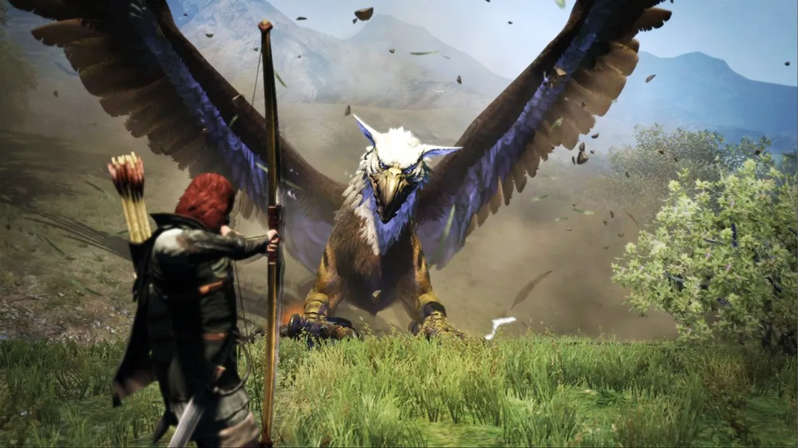

Final Fantasy VII Rebirth
Final Fantasy VII Rebirth adalah bagian kedua dari proyek remake Final Fantasy VII, melanjutkan petualangan Cloud Strife dan kawan-kawan di luar kota Midgar. Game ini menawarkan grafis yang memukau, sistem pertarungan yang dinamis, dan cerita yang lebih mendalam dibandingkan versi aslinya. Pemain dapat menjelajahi dunia yang lebih luas dengan berbagai aktivitas dan misi sampingan yang menarik.
Dragon's Dogma 2
Dragon's Dogma 2 adalah sekuel dari game action RPG populer yang dirilis oleh Capcom. Game ini menawarkan dunia terbuka yang luas dengan sistem pertarungan yang mendalam dan mekanika 'pawn' yang unik, di mana pemain dapat merekrut dan melatih karakter AI untuk membantu dalam pertempuran. Dengan peningkatan grafis dan gameplay yang lebih halus, Dragon's Dogma 2 memberikan pengalaman RPG yang mendalam dan menantang.
Like a Dragon: Infinite Wealth
Like a Dragon: Infinite Wealth adalah entri terbaru dalam seri Yakuza, yang dikenal dengan cerita mendalam dan gameplay yang kaya. Game ini melanjutkan kisah Ichiban Kasuga dengan latar belakang baru di Hawaii, menawarkan kombinasi unik antara drama kriminal dan elemen RPG tradisional. Dengan sistem pertarungan turn-based yang ditingkatkan dan berbagai aktivitas sampingan yang menarik, game ini menjadi salah satu RPG terbaik tahun 2024.